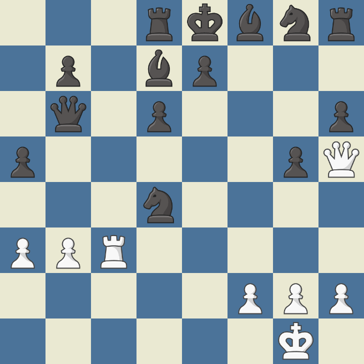
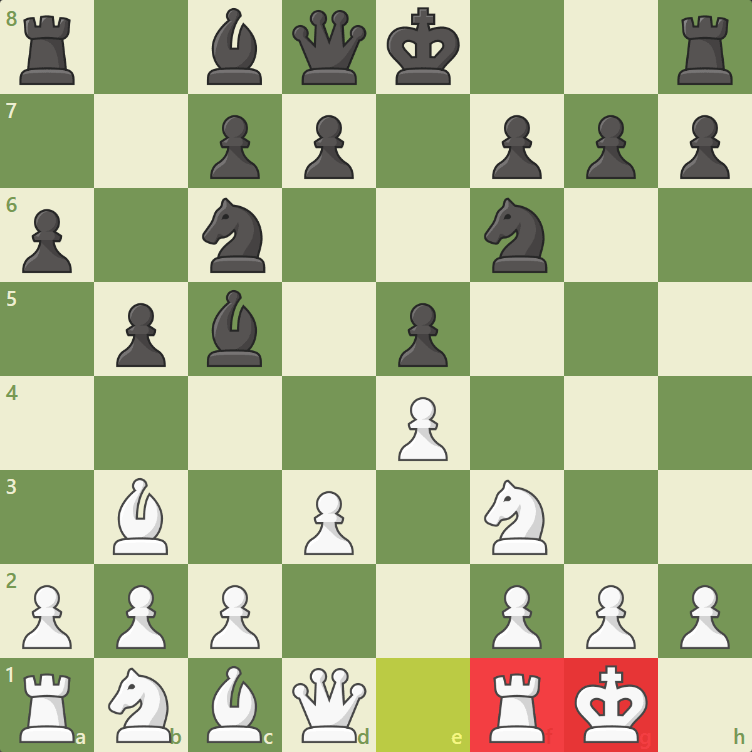
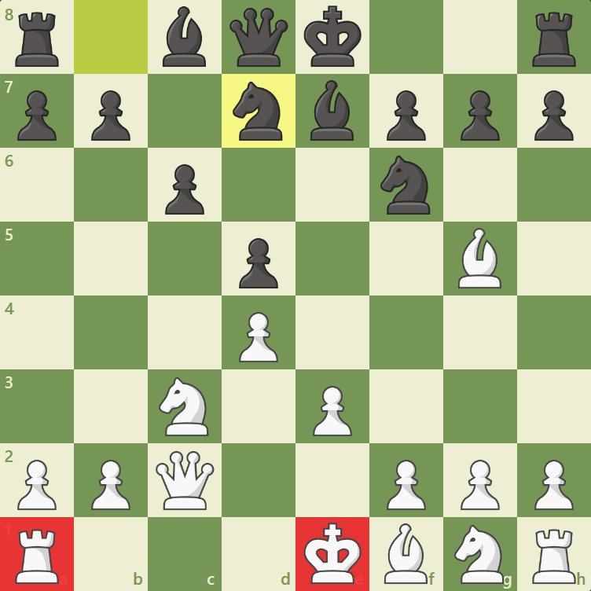
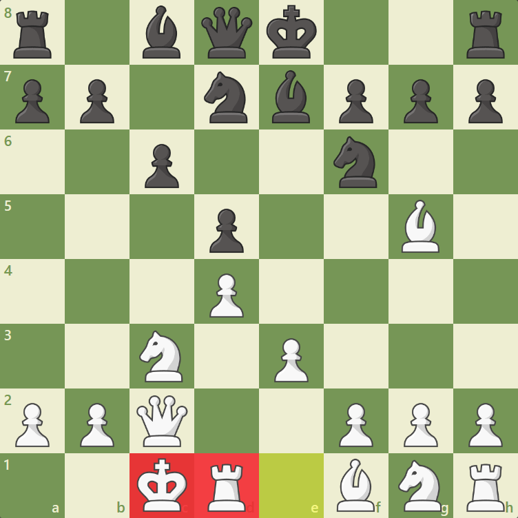
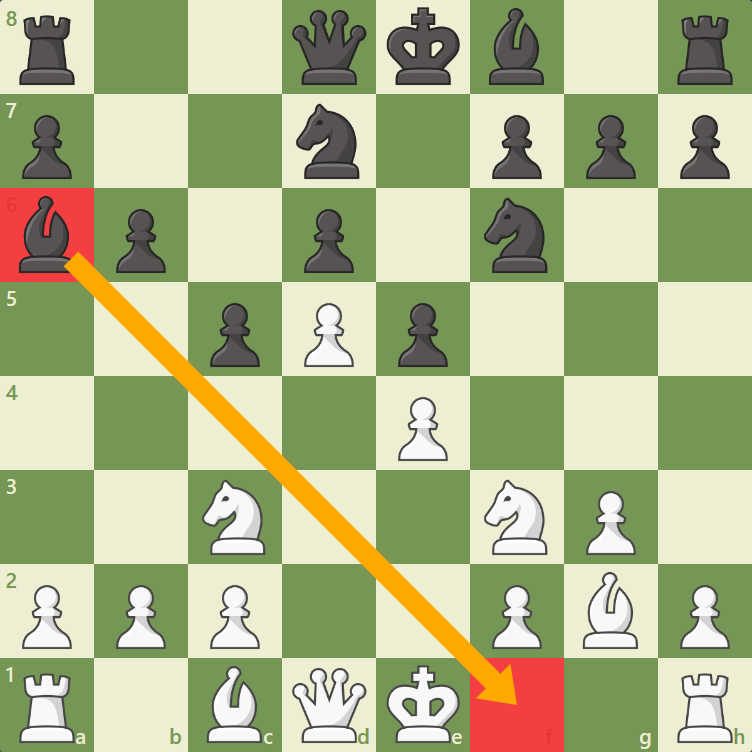
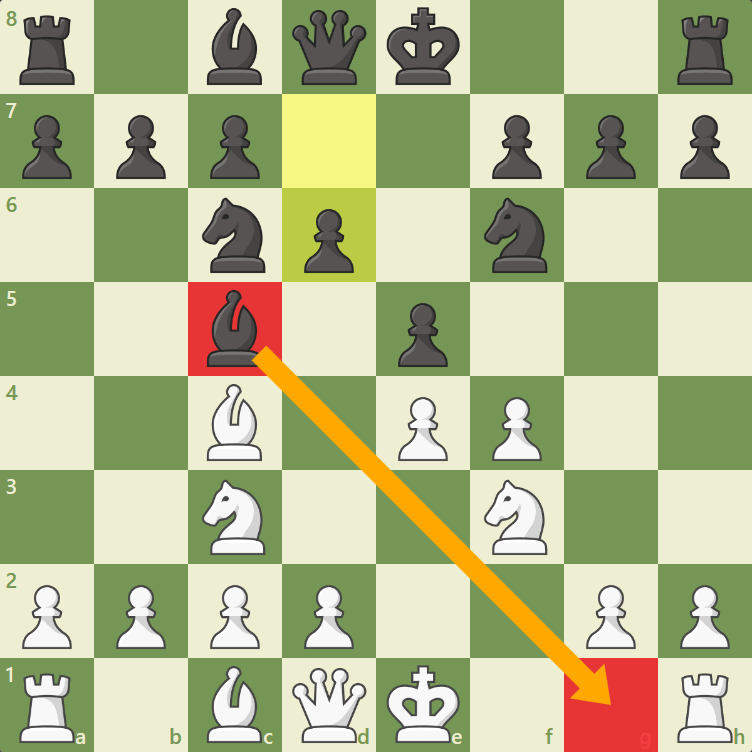
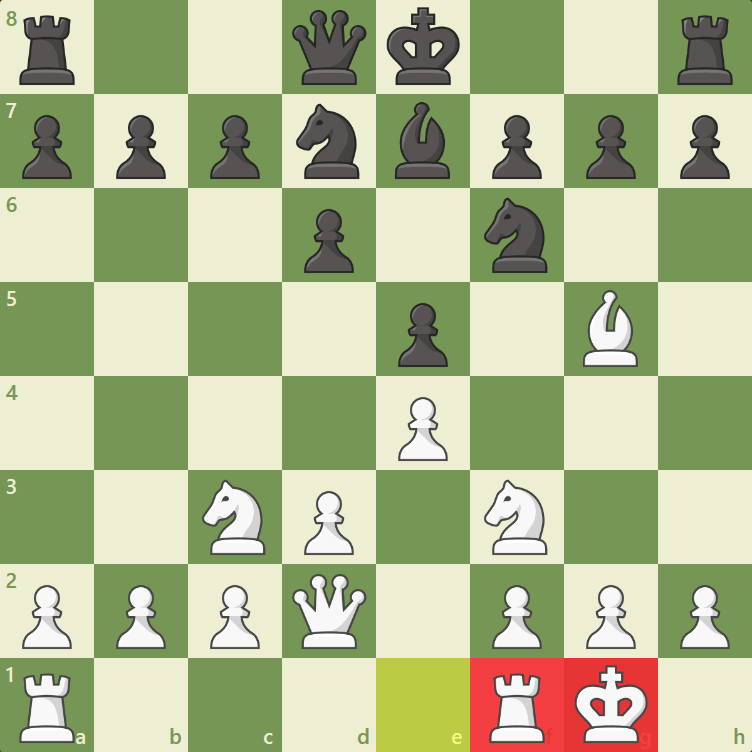

The King
The king is not the most powerful chess piece, but it is the most important one!
If a king is put in checkmate, then the game is over! It's considered to not have
any points of value. Two very important aspects of the game of chess are attacking your
opponent's king while also keeping your own king safe and protected. The king is less
powerful than almost every chess piece, but it is also unique: the king is the only piece
that can never be captured! If a king is attacked, it is in "check".
How the King moves:

The red squares represent the possible squares the King can move to. Therefore the King
moves to all the squares around him.
When a king is attacked, it is in check. A king cannot move into check (that is considered
an illegal move), and if a king is put in check, it must get out of check. There are three
ways to get out of check: 1) move the king out of check, 2) block the check with another
piece and 3) capture the piece putting the king in check. If a king is in check and none of
these options are legal, then a checkmate has occurred and the game is over!
The picture bellow shows an example of a check on the King (not checkmate):
Bellow is a checkmate example:
Black is unable to block or capture white's Queen and neither can they move their King to a safe square therefore this is checkmate.
Castling
Castling is a special move in chess where you do multiple unique actions. First of all, it is the
only move where you may move two pieces in the same move! Secondly, castling is the only time in
chess when it is legal to move the king more than one square! Third, it is the only move that both
develops your rook and protects your king. Castling can be performed on the kingside (notated as 0-0)
or queenside (notated as 0-0-0).
Castling involves the king and a rook. As mentioned, there are many rules to castling: The first is
that you may only castle if you haven't moved your king and your rook (on the side where you want to castle).
The second rule is that no piece can be between your king and the rook on the side where you want to castle.
In the diagram below, we can see that nothing is between White's king on e1 and White's rook on h1.
Since there are no pieces in between the king and the rook and because neither piece has moved, White can castle kingside! How do we do this? The white king moves two squares (from e1 to g1), and the white rook moves from h1 to f1. Here is a diagram of the above moves after kingside castling:
The same rules that we have covered so far for kingside castling apply to queenside castling. In the diagram below, we can see that no pieces are between the white king on e1 and the white rook on a1 (and neither the king nor rook has moved):
So how do we castle queenside? We still move the king over two squares (this time from e1 to c1), and then the rook moves from a1 to d1. Here is a diagram of the above moves after queenside castling:
Other rules of Castling
Sometimes the first two conditions (no pieces are between the king and rook, and neither the king nor rook
has been moved) are satisfied, but we are still unable to castle. Here are three additional rules of castling:
1) If you are in check, you cannot castle. You must first get out of check before you can do anything. In the
diagram below, the bishop on b4 puts the white king is in check, so White is unable to castle.
2) You cannot castle if any square the king is moving through is attacked by your opponent's pieces. In the diagram below, the white king cannot castle kingside because Black's bishop on a6 attacks the f1-square.
3) You cannot castle into check. This rule is easy to remember, since moving into check is illegal in the first place! In the diagram below, the white king cannot castle because Black's bishop on c5 attacks the g1 square.
Why castle?
Now that you understand how and when you can perform this special move, we can discuss why it is so important. Castling gets your king out of the center and protected by pawns. Castling also lets your rook into the game. In the following position, White has just castled kingside:
Note how White's king is very safe on g1 and is protected by the f2, g2, and h2 pawns. We can also see that castling has connected the white rooks, which can now coordinate better. Getting your king out of the center to safety while also developing a rook is a great two-for-one move! By removing your king from the center, you avoid a lot of quick checkmates!